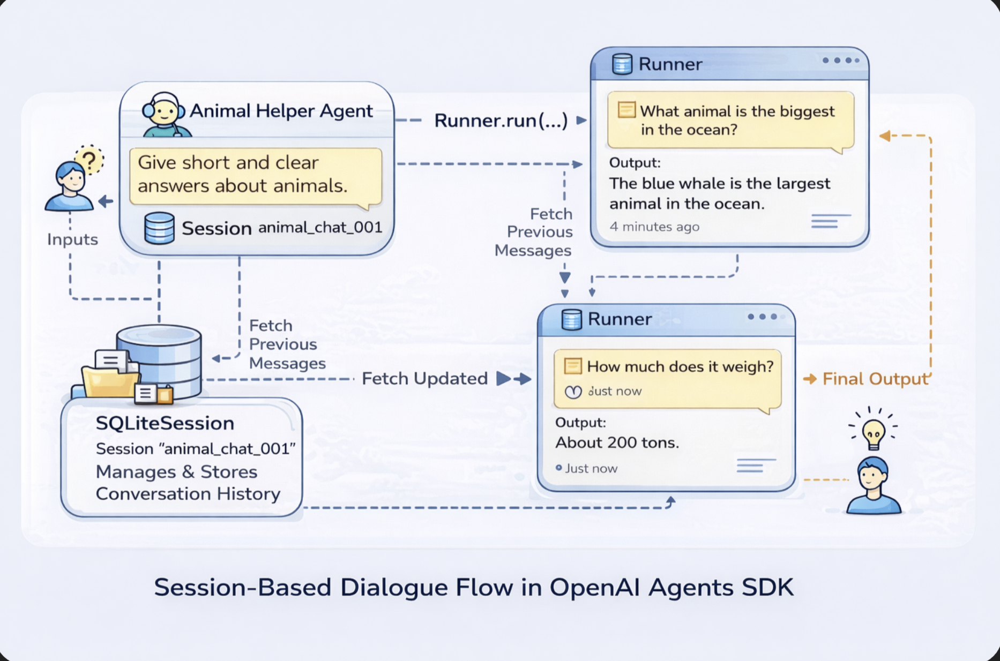

从零构建一个多智能体旅行规划系统：基于 OpenAI Agents SDK 的工程化实践
项目代码:
Part 1 - 架构分析
一、背景与动机（Why）
1.1 传统 LLM 应用的局限
- 单轮 Prompt，难以维护上下文
- 业务逻辑混在 Prompt 中
- 无法可靠地输出结构化结果
- 难以调试、难以扩展
1.2 为什么选择 Agent 架构
- Agent ≠ Chatbot
-
Agent 可以：
-
自主决策
- 使用工具
- 多智能体协作
- 更接近真实业务系统
1.3 本项目解决了什么问题
- 多轮对话收集需求
- 结构化用户画像
- 自动规划并输出行程
- 全流程可控、可观测
二、项目整体架构概览（What）

2.1 系统整体流程
用户输入
↓
Profile Collector Agent（多轮对话）
↓ DONE
Profile Extractor Agent（结构化提取）
↓
Planner Agent（行程规划）
↓ Handoff
Packager Agent（Markdown 输出）
2.2 核心组件说明
| 组件 | 作用 |
|---|---|
| Agents | 执行业务逻辑 |
| Runner | Agent 执行引擎 |
| Session | 对话状态管理 |
| Guardrails | 输入安全控制 |
| Hooks | Tracing & Logging |
| main.py | Orchestration 控制层 |
三、项目目录结构解析（How）
├── main.py # 应用入口 & Agent 编排
├── trip_agents.py # 所有 Agent 定义
├── tools.py # 工具函数（Function Tools）
├── logging_hooks.py # Tracing & Logging
├── config.json # API Key 配置
main.py 是系统“大脑”，Agent 只是“能力模块”。
四、核心设计理念：main.py 不是 Agent
4.1 main.py 的职责边界
- 管理 Session 生命周期
- 控制 Agent 调用顺序
- 处理异常和 Guardrail
- 决定什么时候进入下一阶段
4.2 为什么不把逻辑写进 Agent
- Agent 是不确定的
- 程序是确定的
- 控制权必须在代码侧
五、多轮对话与 Session 设计
5.1 SQLiteSession 的作用
session = SQLiteSession("trip_planner_chat")
- 自动保存历史消息
- 支持多轮上下文
- 支持后续 Extractor 访问
5.2 Session 带来的好处
- 不需要手动拼 Prompt
- Extractor 能“回看”完整对话
- 更接近真实聊天产品
六、Profile Collector：对话式信息收集
6.1 为什么要拆出 Collector Agent
- 不强迫用户一次性输入
- 更自然的对话体验
- Agent 决定下一步该问什么
6.2 DONE 信号设计
Agent → "DONE" → 程序
- Agent 判断任务完成
- main.py 决定后续流程
七、Guardrails：让 Agent 可控而不是“放飞”
7.1 InputGuardrailTripwireTriggered
except InputGuardrailTripwireTriggered:
- 非法输入直接中断
- 防 Prompt Injection
- 防跑偏对话
7.2 Guardrail 在系统中的位置
Guardrail 是系统级能力，不是 Prompt 技巧
八、Profile Extractor：从对话到结构化数据
8.1 为什么需要 Extractor Agent
- Collector 输出是“文本”
- Planner 需要“结构化输入”
8.2 Pydantic + Typed Output
final_profile = extraction_result.final_output_as(TripProfile)
- 降低幻觉
- 提升稳定性
- Agent 之间的协议
九、多 Agent 编排与 Handoff
9.1 Planner → Packager 的责任拆分
- Planner：规划内容
- Packager：组织输出格式
9.2 Handoff 的价值
- main.py 不需要关心中间过程
- Agent 自己决定“交接”
十、Context 的工程化使用
context=profile.model_dump()
- Context ≠ Prompt
- Context 是 Agent 的“隐式输入”
- 支持跨 Agent 共享状态
十一、Tracing & Logging：让 Agent 系统可观测
11.1 LoggingHooks 的作用
- Agent 执行顺序
- Tool / Handoff 调用
- 错误与耗时分析
11.2 对生产环境的意义
- Debug Agent 行为
- 性能与成本分析
- 后续 Eval / Fine-tuning
十二、完整运行流程回顾
- 用户开始对话
- Collector 多轮收集信息
- Guardrail 校验输入
- DONE 触发 Extractor
- Planner 规划行程
- Packager 输出 Markdown
- main.py 打印最终结果
十三、这个项目学到的关键经验
13.1 Agent ≠ 应用
- Agent 是能力单元
- 应用逻辑必须在代码中
13.2 Session 是 Agent 应用的核心基础设施
13.3 强类型是对抗 LLM 不确定性的关键
13.4 多 Agent 比“一个超级 Agent”更可靠
Part 2 多智能体Agents系统分析
通过 OpenAI Agents SDK 构建了一个高度模块化的多智能体系统，将安全校验、对话采集、结构化提取、规划决策与输出渲染彻底解耦，展示了 Agent 编排、强类型输出与 Handoff 机制在复杂业务场景中的工程化价值。
下面我从整体架构 → 各脚本职责 → 关键设计亮点 → 可改进点四个层次，对这三份 Python 脚本做一次系统性分析
一、整体架构概览（你这套设计在做什么）
这三份脚本共同实现了一个基于 OpenAI Agents SDK 的多智能体旅行规划系统，其核心特征是：
- 工具（Tools）能力解耦
- 多 Agent 分工协作
- 强类型输出（Pydantic Schema）
- 安全 Guardrail + 任务 Handoff 的标准化编排
整体流程可以概括为：
用户输入 → 安全校验 → 逐步采集需求 → 结构化提取 → 活动规划 → 行程打包输出
这是一个非常标准、也非常“官方推荐风格”的 Agents SDK 示例工程。
二、tools.py —— 工具层（Tool Layer）
1️⃣ 脚本职责
tools.py 专门定义 Agent 可调用的 function_tool 工具函数，用于扩展模型能力。
@function_tool
def currency_convert(...)
@function_tool
def activity_search(...)
它们具备以下特点：
- 纯函数、无副作用
- 输入输出明确
- 结果可预测（stub/mock）
2️⃣ 设计亮点
✅ 使用 @function_tool 装饰器
这是 Agents SDK 的核心能力之一：
- 自动生成 Tool Schema
- 自动参与 工具调用决策
- 支持被 Agent “理解并调用”
✅ Mock / Stub 设计非常适合教学 & Demo
例如：
fx_rate = 1.17
time.sleep(0.3)
优点是：
- 不依赖外部 API
- 结果稳定
- 演示 Tool Calling 行为更清晰
3️⃣ 工具层在整体架构中的定位
Agent
├── Reasoning
├── Tool Decision
│ └── function_tool (tools.py)
└── Final Output
tools.py 不参与“思考”，只负责“能力补充”。
三、trip_agents.py —— 核心智能体编排（Agent Orchestration）
这是整个系统的中枢文件。
1️⃣ Safety Guardrail（安全护栏 Agent）
作用
所有用户输入 → 必须先通过安全校验
关键设计
- 使用 独立 Agent 做安全判断
- 输出结构化
SafetyCheckOut - 通过
InputGuardrail挂载到其他 Agent
tripwire_triggered=not final_output.is_safe_and_relavant
这是 Agents SDK 中非常推荐的 “软拦截”模式。
2️⃣ Profile Collector（对话式信息采集）
核心能力
- 多轮对话
- 一次只问一个问题
- 信息齐全后返回
"DONE"
城市 → 天数 → 预算 → 兴趣 → 避免项
这是一个典型的 Conversational Agent。
3️⃣ Profile Extractor（结构化提取）
为什么需要它？
对话 ≠ 结构化数据
Extractor 的价值在于：
- 将“自然语言上下文”
- 转换为 Pydantic 强类型对象
class TripProfile(BaseModel):
city: Optional[str]
days: Optional[int]
budget: Optional[float]
...
👉 这是减少 LLM 幻觉、提升可控性的关键设计
4️⃣ Planner Agent（规划核心）
特点
- 依赖 Context 中的 TripProfile
-
严格遵守：
-
兴趣匹配
- 避免项过滤
- 预算上限
"You MUST create a plan that reflects the user's interests."
关键点：Handoff
handoffs=[packager_agent]
Planner 不负责最终展示，而是把结果交给下游 Agent
5️⃣ Packager Agent（输出美化）
职责非常清晰
- 把结构化活动列表
- 转换为 Markdown 行程
- 按天拆分 + emoji + 总价
这是一个 纯输出 Agent。
四、logging / hooks
- 用于 Tracing / Observability
- 配合
trace(workflow_name=...) -
可用于调试：
-
Agent 运行顺序
- Tool 调用
- Handoff 流转
这是生产级 Agent 系统必不可少的一层。
五、整体设计亮点总结
✅ 1. Agent 单一职责原则（SRP）
每个 Agent 只做一件事：
- Guardrail → 安全
- Collector → 对话
- Extractor → 结构化
- Planner → 规划
- Packager → 展示
✅ 2. 强类型输出，显著降低幻觉风险
output_type=TripProfile
output_type=PlannerOut
这点在 多 Agent 协作中尤为关键。
✅ 3. Context 贯穿全流程
- Guardrail
- Planner
- Extractor
共享同一 context，而非反复 Prompt 拼接。
✅ 4. Handoff 替代“一个 Agent 干所有事”
这是 Agents SDK 的核心设计哲学：
Orchestration > Prompt Engineering
六、可改进建议（进阶优化点）
如果你想在博客里“拔高一个层次”，可以提这些：
- Planner Agent 引入 tools
python
tools=[activity_search]
- 增加 Budget Guardrail
- Session + Memory 持久化
- 失败重试 / fallback Agent
- Planner → 多 Planner 并行再聚合
Part 3 - 云端 Agent 项目”真正落地成本地可控系统
项目代码:
把整个项目从 OpenAI 云端模型 → 本地 Ollama + qwen2.5，系统性地改一遍。
结论先给：
Agent 架构、Session、Runner、Guardrail 都不用动
只改「模型接入层」和「客户端初始化方式」
一、整体改造思路（先理解）
你的当前项目依赖的是：
Agents SDK
↓
OpenAI Responses API
↓
OpenAI Cloud Model
我们要改成：
Agents SDK（保持）
↓
OpenAI-Compatible Client
↓
Ollama 本地 HTTP API
↓
qwen2.5:7b
核心原则：
- 不重写 Agent
- 不动 Session / Runner
- 不动多 Agent orchestration
- 只替换 LLM Provider
二、前置条件（你需要先完成）
2.1 安装并启动 Ollama
brew install ollama
ollama serve
2.2 拉取模型（推荐）
ollama pull qwen2.5:7b
确认可用：
ollama run qwen2.5:7b
三、关键改造点总览
| 文件 | 是否修改 | 说明 |
|---|---|---|
main.py |
✅ | 移除 OpenAI Key，配置 BASE_URL |
trip_agents.py |
✅ | Agent model 改为 qwen2.5 |
tools.py |
❌ | 不用改 |
logging_hooks.py |
❌ | 不用改 |
config.json |
❌ / 可删 | Ollama 不需要 Key |
四、核心修改 1：main.py（最重要）
4.1 删除 OpenAI API Key 逻辑
删除这部分：
with open("../../config.json") as f:
config = json.load(f)
API_KEY = config["openai_api_key"]
os.environ["OPENAI_API_KEY"] = API_KEY
4.2 配置 Ollama 为 OpenAI-Compatible Endpoint
在 main.py 顶部 新增：
# Ollama OpenAI-compatible endpoint
os.environ["OPENAI_BASE_URL"] = "http://localhost:11434/v1"
os.environ["OPENAI_API_KEY"] = "ollama" # 任意字符串即可
👉 为什么要这样？
- Agents SDK 仍然“以为”自己在用 OpenAI
- 实际请求会被转发给 Ollama
- Ollama 完全兼容
/v1/chat/completions
4.3 main.py 修改后关键结构（简化版）
import os
import asyncio
from agents import Runner, SQLiteSession
from logging_hooks import LoggingHooks
import trip_agents as tg
# 指向本地 Ollama
os.environ["OPENAI_BASE_URL"] = "http://localhost:11434/v1"
os.environ["OPENAI_API_KEY"] = "ollama"
HOOKS = LoggingHooks()
✅ main.py 的 orchestration 逻辑完全不用动
五、核心修改 2：trip_agents.py（模型切换）
你现在的 Agent 大概是这样定义的（示例）：
planner_agent = Agent(
name="Planner",
instructions="...",
model="gpt-4.1",
)
👉 全部统一改成：
MODEL_NAME = "qwen2.5:7b"
然后：
planner_agent = Agent(
name="Planner",
instructions="...",
model=MODEL_NAME,
)
5.1 推荐统一管理模型名
在 trip_agents.py 顶部：
MODEL = "qwen2.5:7b"
所有 Agent 使用：
model=MODEL
六、Function Tools / Guardrails 是否受影响？
答案：完全不受影响
| 能力 | Ollama qwen2.5 |
|---|---|
| 多轮对话 | ✅ |
| 工具调用 | ✅（模型能力决定） |
| JSON / 结构化输出 | ✅ |
| Agent Handoff | ✅（SDK 层） |
| Session | ✅ |
⚠️ 注意： qwen2.5 的 function calling 稳定性略弱于 GPT-4 👉 建议你 Extractor Agent 用更强约束的 instructions
七、一个完整「已修改」Agent 示例
from agents import Agent
from pydantic import BaseModel
MODEL = "qwen2.5:7b"
class TripProfile(BaseModel):
city: str
days: int
budget: int
interests: list[str]
interests_to_avoid: list[str]
profile_extractor_agent = Agent(
name="ProfileExtractor",
instructions="""
Extract the user's trip profile from the conversation.
Return ONLY valid JSON that matches the schema.
""",
model=MODEL,
output_type=TripProfile,
)
八、性能 & 成本现实提醒（很重要）
8.1 推荐配置
| 项目 | 建议 |
|---|---|
| RAM | ≥ 16GB |
| CPU | Apple Silicon / 8C+ |
| GPU | 可选（Metal / CUDA） |
8.2 token & latency
- qwen2.5:7b 比 GPT-4 慢
- 一定要用 streaming（如果接 UI）
- 控制 Session 长度（你已经做得很好）
最终效果（你将获得）
- ✅ 完全离线
- ✅ 零 token 成本
- ✅ 可控 Agent 系统
- ✅ 可私有化部署
- ✅ 架构不缩水